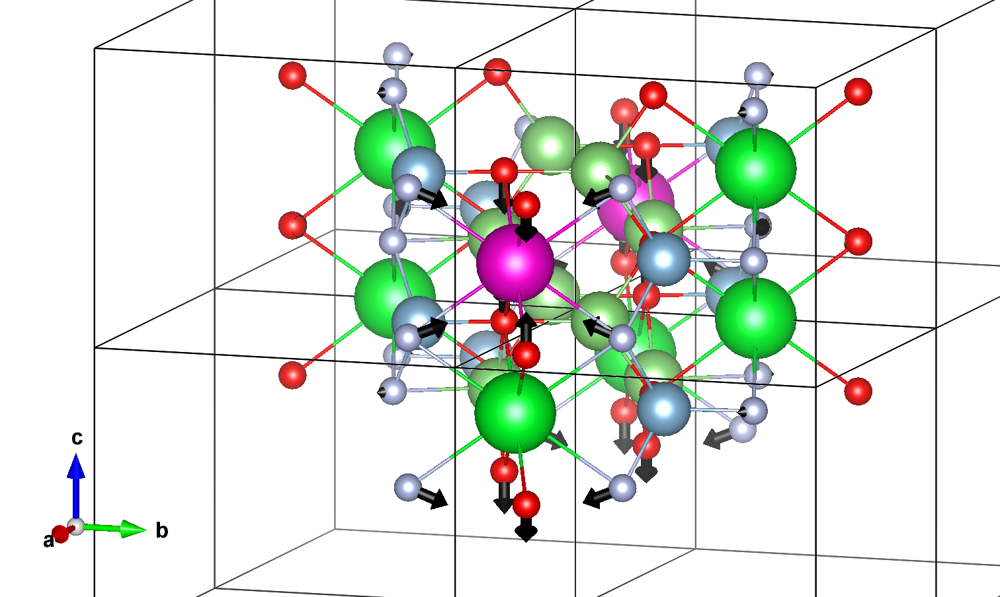

\(\newcommand{\AA}{\unicode{x212B}}\)
Post-proccessing of a LumiWork, effective phonon mode model.#
Now that the LumiWork completed, it is time to analyze the results. This first section shows how to do that following the so-called “single effective phonon mode model” or “one-dimensional configuration coordinate diagream” (1D-CCM). We recall that, in this model, it is assumed that there exists a fictious effective phonon mode whose eigenvectors follow exactly the ground-state to excited-state atomic relaxation, with an eigenfrequency computed with equation… of section …
For this analysis, we use the \(\Delta\)SCF computations shown in the previous tutorial to instantiate a DeltaSCF object :
from abipy.lumi.deltaSCF import DeltaSCF
scf_files=["flow_deltaSCF/w0/t2/outdata/out_GSR.nc",
"flow_deltaSCF/w0/t3/outdata/out_GSR.nc",
"flow_deltaSCF/w0/t4/outdata/out_GSR.nc",
"flow_deltaSCF/w0/t5/outdata/out_GSR.nc"]
results=DeltaSCF.from_four_points_file(scf_files)
# or
# results=DeltaSCF.from_json_file("flow_deltaSCF/w0/outdata/lumi.json")
# or only two relaxations
# results=DeltaSCF.from_relax_file(["flow_deltaSCF/w0/t0/outdata/out_GSR.nc",
# "flow_deltaSCF/w0/t1/outdata/out_GSR.nc"])
Note
Energy units are given in eV, distance units in \(\AA\).
Total energies and electronic levels#
The energies of the four relevant states are accessible with :
print(results.ag_energy,results.ag_star_energy,results.ae_energy,results.ag_star_energy)
-12938.531524261258 eV -12936.973286426179 eV -12938.444385578076 eV -12936.973286426179 eV
The electronic eigenenergies, if computed at a single k-point, typically \(\Gamma\),can be plotted with (spin up in black, spin down in red) :
results.plot_eigen_energies(scf_files);
In the ground state, notice the 7 Eu\(_{4f}\) states located in the gap. In the excited state (simulated with constrained occupation, as shown with the (un)filled markers), the created 4f hole lowers the energy of an occupied 5d state, which is now located at the top of the gap. The 6 remaining occupied 4f states are pushed down in the VB. If you have computed the four band structures associated to each point, you can use results.plot_four_BandStructures(nscf_files) where nscf_files is the list of four band structures .nc files.
nscf_files=["nscf_files/t6/out_GSR.nc",
"nscf_files/t7/out_GSR.nc",
"nscf_files/t8/out_GSR.nc",
"nscf_files/t9/out_GSR.nc",]
results.plot_four_BandStructures(nscf_files);
Notice the strong dispersion of the bands close the CB bottom due to an interaction between Eu\(_{5d}\) replica. Increasing the supercell size reduces this dispersion.
Atomic relaxation#
The ground/excited states structures are accessible with :
results.structure_gs()
#results.structures_ex()
Structure Summary
Lattice
abc : 7.959000000054767 7.959000000054767 6.368000000202725
angles : 90.0 90.0 90.0
volume : 403.3852966263933
A : 7.959000000054767 0.0 0.0
B : 0.0 7.959000000054767 0.0
C : 0.0 0.0 6.368000000202725
pbc : True True True
PeriodicSite: Eu (3.9795, 0.0000, 1.5920) [0.5000, 0.0000, 0.2500]
PeriodicSite: Sr (3.9795, 0.0000, 4.7760) [0.5000, 0.0000, 0.7500]
PeriodicSite: Sr (-0.0000, 3.9795, 0.0008) [-0.0000, 0.5000, 0.0001]
PeriodicSite: Sr (-0.0000, 3.9795, 3.1832) [-0.0000, 0.5000, 0.4999]
PeriodicSite: Li (1.0143, 6.5691, 1.5920) [0.1274, 0.8254, 0.2500]
PeriodicSite: Li (1.0112, 6.5664, 4.7760) [0.1270, 0.8250, 0.7500]
PeriodicSite: Li (6.9447, 1.3899, 1.5920) [0.8726, 0.1746, 0.2500]
PeriodicSite: Li (6.9478, 1.3926, 4.7760) [0.8730, 0.1750, 0.7500]
PeriodicSite: Li (1.3928, 1.0131, 0.0018) [0.1750, 0.1273, 0.0003]
PeriodicSite: Li (1.3928, 1.0131, 3.1822) [0.1750, 0.1273, 0.4997]
PeriodicSite: Li (6.5662, 6.9459, 0.0018) [0.8250, 0.8727, 0.0003]
PeriodicSite: Li (6.5662, 6.9459, 3.1822) [0.8250, 0.8727, 0.4997]
PeriodicSite: Al (2.7995, 5.4314, 0.0014) [0.3517, 0.6824, 0.0002]
PeriodicSite: Al (2.7995, 5.4314, 3.1826) [0.3517, 0.6824, 0.4998]
PeriodicSite: Al (5.1595, 2.5276, 0.0014) [0.6483, 0.3176, 0.0002]
PeriodicSite: Al (5.1595, 2.5276, 3.1826) [0.6483, 0.3176, 0.4998]
PeriodicSite: Al (2.5294, 2.7943, 1.5920) [0.3178, 0.3511, 0.2500]
PeriodicSite: Al (2.5292, 2.7979, 4.7760) [0.3178, 0.3515, 0.7500]
PeriodicSite: Al (5.4296, 5.1647, 1.5920) [0.6822, 0.6489, 0.2500]
PeriodicSite: Al (5.4298, 5.1611, 4.7760) [0.6822, 0.6485, 0.7500]
PeriodicSite: N (4.6505, 5.8173, -0.0005) [0.5843, 0.7309, -0.0001]
PeriodicSite: N (4.6505, 5.8173, 3.1845) [0.5843, 0.7309, 0.5001]
PeriodicSite: N (3.3085, 2.1417, -0.0005) [0.4157, 0.2691, -0.0001]
PeriodicSite: N (3.3085, 2.1417, 3.1845) [0.4157, 0.2691, 0.5001]
PeriodicSite: N (2.1505, 4.6489, 1.5920) [0.2702, 0.5841, 0.2500]
PeriodicSite: N (2.1522, 4.6510, 4.7760) [0.2704, 0.5844, 0.7500]
PeriodicSite: N (5.8085, 3.3101, 1.5920) [0.7298, 0.4159, 0.2500]
PeriodicSite: N (5.8068, 3.3080, 4.7760) [0.7296, 0.4156, 0.7500]
PeriodicSite: O (2.0097, 7.0596, -0.0005) [0.2525, 0.8870, -0.0001]
PeriodicSite: O (2.0097, 7.0596, 3.1845) [0.2525, 0.8870, 0.5001]
PeriodicSite: O (5.9493, 0.8994, -0.0005) [0.7475, 0.1130, -0.0001]
PeriodicSite: O (5.9493, 0.8994, 3.1845) [0.7475, 0.1130, 0.5001]
PeriodicSite: O (0.8978, 2.0143, 1.5920) [0.1128, 0.2531, 0.2500]
PeriodicSite: O (0.8972, 2.0175, 4.7760) [0.1127, 0.2535, 0.7500]
PeriodicSite: O (7.0612, 5.9447, 1.5920) [0.8872, 0.7469, 0.2500]
PeriodicSite: O (7.0618, 5.9415, 4.7760) [0.8873, 0.7465, 0.7500]
It is sometimes interesting to decompose the gs-ex displacements per specie :
results.get_dataframe_species()
| symbol | mass | $\Delta R^2$ | $\Delta Q^2$ | |
|---|---|---|---|---|
| 0 | Sr | 87.620000 | 0.000020 | 0.001736 |
| 1 | Li | 6.941000 | 0.000611 | 0.004240 |
| 2 | Eu | 151.964000 | 0.000000 | 0.000000 |
| 3 | Al | 26.981539 | 0.002379 | 0.064176 |
| 4 | N | 14.006700 | 0.010490 | 0.146933 |
| 5 | O | 15.999400 | 0.009172 | 0.146746 |
or per atom :
results.get_dataframe_atoms(defect_symbol="Eu")
| symbol | mass | $\Delta R$ | $\Delta Q^2$ | $\Delta F$ | dist. from defect | |
|---|---|---|---|---|---|---|
| 0 | Eu | 151.964000 | 0.000000 | 0.000000 | 2.151473e-18 | 0.000000 |
| 1 | Sr | 87.620000 | 0.000000 | 0.000000 | 2.151473e-18 | 3.184000 |
| 2 | Sr | 87.620000 | 0.003147 | 0.000868 | 5.668443e-02 | 5.848495 |
| 3 | Sr | 87.620000 | 0.003147 | 0.000868 | 5.668443e-02 | 5.848495 |
| 4 | Li | 6.941000 | 0.013931 | 0.001347 | 2.790292e-02 | 3.274783 |
| 5 | Li | 6.941000 | 0.006465 | 0.000290 | 4.421250e-03 | 4.570376 |
| 6 | Li | 6.941000 | 0.013931 | 0.001347 | 2.790292e-02 | 3.274783 |
| 7 | Li | 6.941000 | 0.006465 | 0.000290 | 4.421250e-03 | 4.570376 |
| 8 | Li | 6.941000 | 0.005897 | 0.000241 | 7.491245e-02 | 3.200975 |
| 9 | Li | 6.941000 | 0.005897 | 0.000241 | 7.491245e-02 | 3.200975 |
| 10 | Li | 6.941000 | 0.005897 | 0.000241 | 7.491245e-02 | 3.200975 |
| 11 | Li | 6.941000 | 0.005897 | 0.000241 | 7.491245e-02 | 3.200975 |
| 12 | Al | 26.981539 | 0.011620 | 0.003643 | 2.632270e-02 | 3.211145 |
| 13 | Al | 26.981539 | 0.011620 | 0.003643 | 2.632270e-02 | 3.211145 |
| 14 | Al | 26.981539 | 0.011620 | 0.003643 | 2.632270e-02 | 3.211145 |
| 15 | Al | 26.981539 | 0.011620 | 0.003643 | 2.632270e-02 | 3.211145 |
| 16 | Al | 26.981539 | 0.010062 | 0.002732 | 9.742844e-02 | 3.148179 |
| 17 | Al | 26.981539 | 0.028601 | 0.022071 | 2.031258e-01 | 4.479922 |
| 18 | Al | 26.981539 | 0.010062 | 0.002732 | 9.742844e-02 | 3.148179 |
| 19 | Al | 26.981539 | 0.028601 | 0.022071 | 2.031258e-01 | 4.479922 |
| 20 | N | 14.006700 | 0.046122 | 0.029795 | 4.656482e-01 | 2.751901 |
| 21 | N | 14.006700 | 0.046122 | 0.029795 | 4.656482e-01 | 2.751901 |
| 22 | N | 14.006700 | 0.046122 | 0.029795 | 4.656482e-01 | 2.751901 |
| 23 | N | 14.006700 | 0.046122 | 0.029795 | 4.656482e-01 | 2.751901 |
| 24 | N | 14.006700 | 0.023441 | 0.007697 | 1.177240e-01 | 3.781826 |
| 25 | N | 14.006700 | 0.021003 | 0.006179 | 9.130918e-02 | 4.941623 |
| 26 | N | 14.006700 | 0.023441 | 0.007697 | 1.177240e-01 | 3.781826 |
| 27 | N | 14.006700 | 0.021003 | 0.006179 | 9.130918e-02 | 4.941623 |
| 28 | O | 15.999400 | 0.047004 | 0.035349 | 4.181154e-01 | 2.687952 |
| 29 | O | 15.999400 | 0.047004 | 0.035349 | 4.181154e-01 | 2.687952 |
| 30 | O | 15.999400 | 0.047004 | 0.035349 | 4.181154e-01 | 2.687952 |
| 31 | O | 15.999400 | 0.047004 | 0.035349 | 4.181154e-01 | 2.687952 |
| 32 | O | 15.999400 | 0.005152 | 0.000425 | 1.622945e-01 | 3.681672 |
| 33 | O | 15.999400 | 0.011860 | 0.002251 | 5.464372e-02 | 4.869160 |
| 34 | O | 15.999400 | 0.005152 | 0.000425 | 1.622945e-01 | 3.681672 |
| 35 | O | 15.999400 | 0.011860 | 0.002251 | 5.464372e-02 | 4.869160 |
You can plot these displacements (or ground state forces at the excited state atomic positions) as a function of the distance with respect to the defect. This allows to check the convergence of your calculation with respect to the supercell size. We see in our toy example that the results are not converged : the displacements are underestimated because of cancelation error due to periodic defect replica. Note that the forces decay faster with respect to the distance (this will be important in later tutorials).
results.plot_delta_R_distance(defect_symbol="Eu");
results.plot_delta_F_distance(defect_symbol="Eu");
In order to visualize these displacements on a VESTA structure, you can follow these steps. (1) create a cif file with the ground state structure. (2) Open the structure with VESTA software and save it in a .vesta format (this should be done mannualy). (3) Use draw_displacements_vesta() method.
results.structure_gs().to(filename="gs_stru.cif")
# then open this cif with vesta, save it as .vesta file format
results.draw_displacements_vesta(in_path="gs_stru.vesta",color_vector=[0, 0, 0])
Vesta files created and stored in :
/Users/jbouquiaux/git/lumi_book/lumi_book/lumi/VESTA_FILES
The resulting vesta file should look like : 
{kind=link}
You can modify the vectors drawing by changing the default arguments
help(results.draw_displacements_vesta)
Help on method draw_displacements_vesta in module abipy.lumi.deltaSCF:
draw_displacements_vesta(in_path, mass_weighted=False, scale_vector=20, width_vector=0.3, color_vector=[255, 0, 0], centered=True, factor_keep_vectors=0.1, out_path='VESTA_FILES', out_filename='gs_ex_relaxation') method of abipy.lumi.deltaSCF.DeltaSCF instance
Draw the ground state to excited state atomic relaxation on a vesta structure.
Args:
in_path : path where the initial .vesta structure in stored, should correspond to the ground state relaxed structure.
mass_weighted : If True, weight the displacements by the atomic masses. Draw the \Delta Q in that case.
scale_vector : scaling factor of the vector modulus
width_vector : vector width
color_vector : color in rgb format
centered : center the vesta structure around [0,0,0]
factor_keep_vectors : draw only the eigenvectors with magnitude > factor_keep_vectors * max(magnitude)
out_path : path where .vesta files with vector are stored
Luminescent properties following the 1D-CCM#
One can vizualise the 1D-CCM and associated displaced parabolas with
results.draw_displaced_parabolas();
Or get a dataframe (or dictionnary) with the main 1D-CCM parameters.
results.get_dataframe()
#results.get_dict_results()
| E_em | E_abs | E_zpl | E_fc_gs | E_fc_ex | Delta_S | Delta_R | Delta_Q | Eff_freq_gs | Eff_freq_ex | S_em | S_abs | |
|---|---|---|---|---|---|---|---|---|---|---|---|---|
| None | 1.402772 | 1.558238 | 1.48991 | 0.087139 | 0.068328 | 0.155466 | 0.15057 | 0.603183 | 0.044747 | 0.039624 | 1.947347 | 1.724392 |
Finally, one can plot the luminescence lineshape at 0K :
results.plot_lineshape_1D_zero_temp(energy_range=[1,2]);
help(results.plot_lineshape_1D_zero_temp)
Help on method plot_lineshape_1D_zero_temp in module abipy.lumi.deltaSCF:
plot_lineshape_1D_zero_temp(energy_range=[0.5, 5], max_m=25, phonon_width=0.01, with_omega_cube='True', normalized='Area', ax=None, **kwargs) method of abipy.lumi.deltaSCF.DeltaSCF instance
Plot the the emission lineshape following the effective phonon 1D-CCM at T=0K.
Args:
ax: |matplotlib-Axes| or None if a new figure should be created.
energy_range: Energy range at which the intensities are computed, ex : [0.5,5]
max_m: Maximal vibrational state m considered
phonon_width: fwhm of each phonon peak, in eV
with_omega_cube: Considered or not the omega^3 dependence of the intensity
normlized: Normalisation procedure. 'Area' if Area under the curve = 1. 'Sum' if maximum of the curve = 1.
Returns: |matplotlib-Figure|
Keyword arguments controlling the display of the figure:
================ ====================================================
kwargs Meaning
================ ====================================================
title Title of the plot (Default: None).
show True to show the figure (default: True).
savefig "abc.png" or "abc.eps" to save the figure to a file.
size_kwargs Dictionary with options passed to fig.set_size_inches
e.g. size_kwargs=dict(w=3, h=4)
tight_layout True to call fig.tight_layout (default: False)
ax_grid True (False) to add (remove) grid from all axes in fig.
Default: None i.e. fig is left unchanged.
ax_annotate Add labels to subplots e.g. (a), (b).
Default: False
fig_close Close figure. Default: False.
================ ====================================================